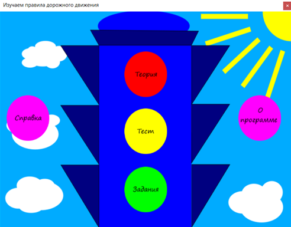
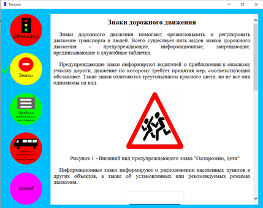
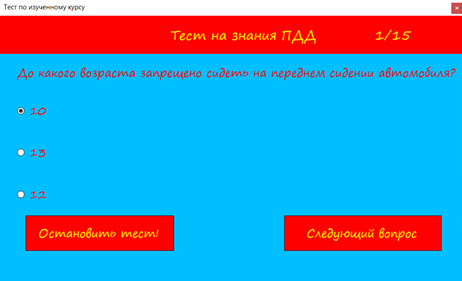
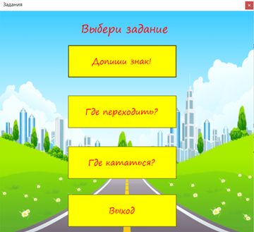
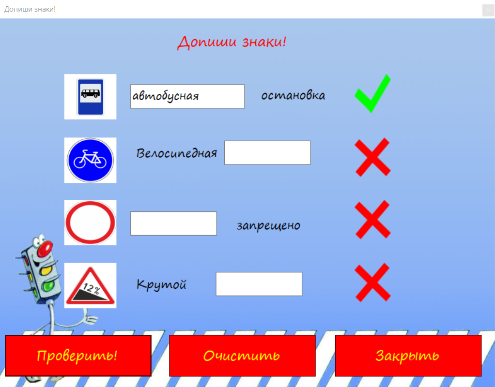
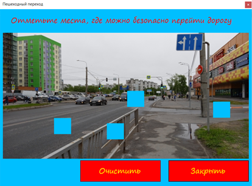
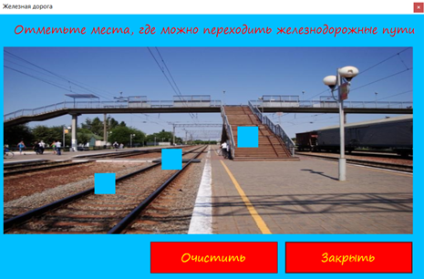
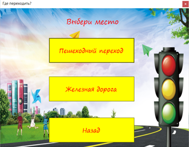
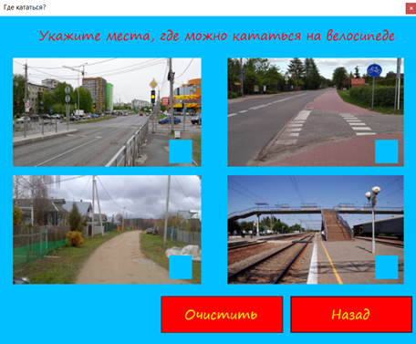
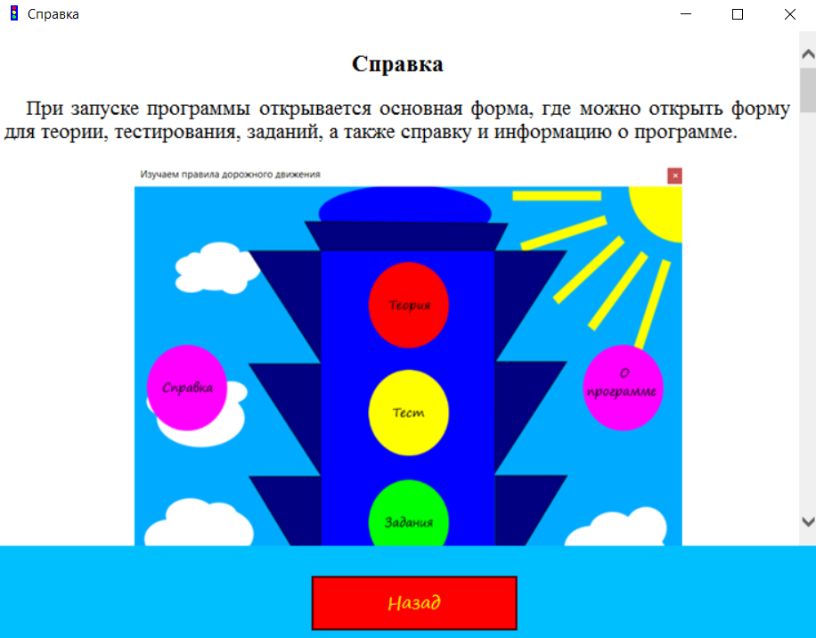

При запуске программы открывается основная форма, где можно открыть форму для теории, тестирования, заданий, а также справку и информацию о программе.

Рисунок 1 - Основная форма приложения
В форме для изучения теории можно нажать на кнопку с названием теоретического материала и необходимый материал отобразится на экране.

Рисунок 2 - Форма для изучения теории
В форме для прохождения теста необходимо нажать на кнопку "Начать тест" и тест запустится. В тесте всего 15 вопросов, в каждом вопросе по 3 варианта ответа. Только один ответ правильный. Время на прохождение теста не ограничено. В конце показывается количество правильных и неправильных ответов и выставляется оценка. При желании можно пройти тест заново.

Рисунок 3 - Форма для прохождения тестирования
В форме для выполнения заданий нужно нажать кнопку с одним из заданий - "Допиши знаки!", "Где переходить?" и "Где кататься?".

Рисунок 4 - Форма для выбора заданий
В задании "Допиши знаки!" необходимо написать названия 4 знаков дорожного движения. При нажатии кнопки "Проверить!" проверяются результаты. Если результаты верны, то программа засчитывает правильные ответы, а если нет, то засчитывает неправильные.

Рисунок 5 - Форма для прохождения задания "Допиши знаки!"
В задании "Где переходить?" необходимо отметить места, где можно безопасно перейти либо дорогу (рисунок 6), либо железнодорожные пути (рисунок 7). При правильном выборе высветится слово "Правильно!" и дополнительный комментарий. При неправильном ответе высветится слово "Неправильно!" вместе с дополнительным комментарием. Перед началом прохождения даётся выбор места (рисунок 8).

Рисунок 6 - Первая форма для прохождения задания "Где переходить?"

Рисунок 7 - Вторая форма для прохождения задания "Где переходить?"

Рисунок 8 - Форма для выбора места в задании "Где переходить?"
В задании "Где кататься?" (рисунок 9) необходимо отметить места, где можно безопасно кататься на велосипеде. При правильном выборе высветится слово "Правильно!" и дополнительный комментарий. При неправильном ответе высветится слово "Неправильно!" вместе с дополнительным комментарием.

Рисунок 9 - Форма для прохождения задания "Где кататься?"
В окне справка отображается информация о программе (рисунок 10).

Рисунок 10 - Окно для отображения справки
В окне информация о программе выводится информация о версии программы, о разработчике и о годе разработки (рисунок 11).
Рисунок 11 - Окно информации о программе